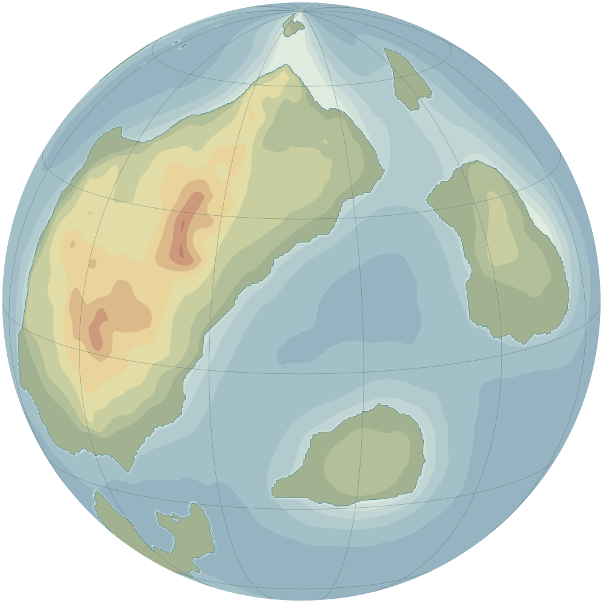

Vale
File
Edit
View
Layer
Map
Window
Help
Fri Oct 16 9:41 AM
Kareth
kareth.gpkg · Saved
World
Maps
Atlas
Globe
Flat
Raise
Size
120 km
Flow
30%
Hardness
20%
Pressure sets the flow
Brush…

Brush
Size
120 km
Hardness
20%
Flow
30%
Spacing
10%
Smoothing
40%
Pen pressure
Pressure sets the size
Pressure sets the flow
Soft
Linear
Firm
Size follows the zoom